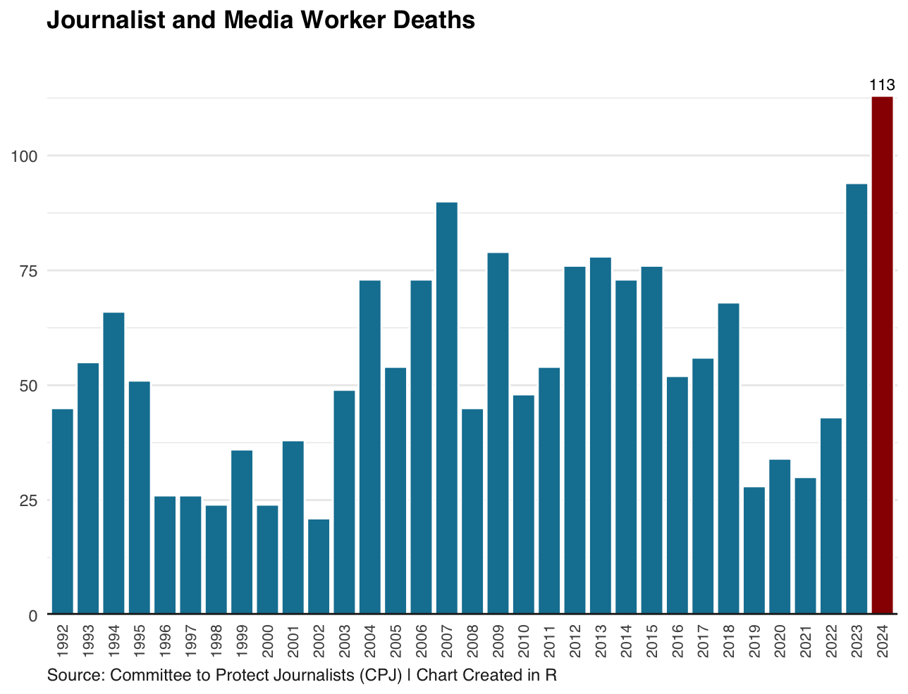

An American-British national and freelance journalist Christopher Allen was shot dead on 26 August 2017 after embedding with rebel forces to cover a clash in South Sudan.
Allen was killed by government forces and his dead body was "deliberately stripped naked", according to his family statement.
South Sudanese Minister of Information Michael Makuei, while addressing a ceremony to mark the International Day to End Impunity for Crimes against Journalists in 2022, called him a "rebel". Makuei said that the government was not launching an investigation into the case.
"This man entered South Sudan illegally and it is why I declared in a statement that we have killed a white rebel because he was killed on the side of rebels," said Makuei .
Allen is not just a one-off case. More journalists were killed in 2024 than at any point in the past three decades, said a report by the Committee to Protect Journalists (CPJ) in 2025.
Lecturer at Goldsmiths Dr Omega Douglas said that the level of danger for journalists reporting on conflict has been rising, with some of the most authoritative politicians showing no regard for the significance of journalism and the protection of journalists.
Douglas said: "Tragically, as the CPJ and other organisations highlight, reporting on conflict is extremely dangerous and the level of danger for journalists is increasing in a world where some of the most powerful politicians, including in the largest democracies, show a complete disregard for the importance of journalism and the safety of journalists."

In 2024, 113 journalists and media personnel were killed with confirmed motives, according to CPJ data.
2024 was regarded as the deadliest year for journalists in the past three decades.
CPJ blamed Israel for the death of nearly-two thirds of journalists in 2024
In Allen’s case, the British and the US embassies in Juba released a joint statement in August 2023 urging the South Sudanese government to carry out a transparent investigation.
“The U.S. and U.K. Embassies renew calls for the transitional Government of South Sudan to conduct a credible investigation into the death of Christopher Allen, to make the results public, and to ensure accountability. After six years, Mr. Allen’s family, friends, and colleagues deserve answers,” said the statement.
After widespread outcries and repeated calls, the South Sudanese government finally conducted a probe into his death, findings of which have been largely called into question and are believed not to have been aimed at establishing the truth.
CPJ’s Africa programme coordinator Muthoki Mumo said: "It is a relief that after six long years, South Sudanese authorities have reconsidered their refusal to investigate Christopher Allen’s killing, although the investigation committee’s tight deadline raises serious concerns that it may become a mere public relations exercise instead of a genuine desire to establish the truth."
Reporters Without Borders said in April 2024 that the investigation had created a hindrance to the path to justice.
Likewise, the US Department of State said that the investigation had not answered questions about his killing.
“The subsequently released report does not address in a comprehensive manner all the factors that led to Mr. Allen’s death or the disrespectful treatment of his remains. We renew our call on the transitional government to conduct a credible investigation into Mr. Allen’s death and to demonstrate the political will to take accountability seriously,” said the US Department of State .
Yet, circumstances around his death have not come to light. His family who received a scanned photo of 12-page letter have come to suspect that the death was not as a result of an accident of war or crossfire but a targeted killing, said a Tortoise podcast presenter, Basia Cummings.
It is still a big question mark whether he was a reckless freelancer, a mercenary, or a young and ambitious reporter who had been caught in crossfire?
There is no end in sight to the ongoing wars in Ukraine and Gaza. Journalists continue to suffer casualties, with CPJ data showing that 34 journalists and media workers have been killed so far in 2025.
The majority of these deaths - 22 - happened in what CPJ describes as Israel and the Occupied Palestinian Territories. The figures highlight the increasing dangers media workers and journalists face while covering conflicts.
2024 classed as deadliest year for journalists
At least 103 journalists, including 87 men and 16 women, were killed in 2024, the highest figure in the past three decades. The data only include journalist deaths and confirmed cases.
According to CPJ methodology, the committee considers a case “confirmed” as work-related only when it becomes certain that a journalist was killed directly because of his or her work in combat or crossfire; or while carrying out a dangerous assignment.
CPJ said in its report published on 12 February 2025 Israel was responsible for 70% of journalist deaths in 2024.
The number of wars whether be they political, criminal or military in nature have increased twofold over the past five years while the highest number of deaths of journalists have occurred in countries such as Sudan, Pakistan, and Myanmar, said the CPJ report.
Number of journalists killed from 1992 to 2024
The report said that the highest number of journalists killed in Israel-Gaza war reached 85 in 2024 and 78 in 2023. Of 85, three were killed in Lebanon.
Hamza Yusuf - a British-Palestinian writer and journalist - blamed Israel for “systematic” targeting journalists in Gaza.
{kind=link}
“There's definitely been a systematic targeting of Palestinian journalists in Gaza, and this has a very sinister objective,” said Hamza.
Hamza insisted that banning foreign journalists from entry into Gaza had made local people turn into “accidental war correspondents” to report on incidents happening in the strip.
Hamza said: “Many of them are not journalists by trade, and have become, what some people call, 'accidental war correspondents' . They are the sole way in which Israel's crimes can be shown to the outside world and are heavily relied upon and used by social media as well as major broadcasters and media outlets.”
Hamza continued: “To Israel, this is unacceptable. And the systematic killing of them illustrates this. Israel has such a level of impunity from a compliant international community that it has even admitted on multiple occasions that it is actively kills Palestinian journalists, like Hossam Shabat from Al Jazeera and the recent assassination of Hassen Isleh.”
Furthermore, Taghreed hailing from Gaza stated her belief that Gaza had witnessed huge number of fatalities among journalist and media workers.
Taghreed, now a media and communication student in London, blamed Israeli forces for “deliberately” targeting journalists in Gaza to eliminate what she called evidence of war crimes there. She cited figures on journalist deaths that cannot be independently verified.
Listen to audio interview with Taghreed
“
I guess the many places where it [CPJ report] mentioned and many countries where mentioned where things are not that stable,
and yet Gaza, especially Gaza, Palestine, had the hugest number, the biggest number towards the many journalists that they were killed.
And we know who is responsible for that, the Israeli occupation.
And I was like stating some notes here in a paper that in 2024, 58 journalists were dead, were killed.
And in 2023, 78 journalists were killed.
Since so far in 2025, at least 170 journalists killed till this moment.
In total, I guess like that 333 journalists were killed in total since 2023 to this moment.
And why why they are targeted.
It is really quite obvious because the Israeli occupation wants to erase any source of evidence that they are committing a war crimes in that area.
”
According to CPJ data, 124 journalists and media workers- including both confirmed and unconfirmed cases- were killed in 2024, highlighting the growing threats to journalism and the free flow of information worldwide.
CPJ says 124 journalists, media workers killed in 2024
82 killed in 'Israel and the Occupied Palestinian Territory'
A drone strike by Israeli forces on 7 January 2024 killed Hamza Al Dahdouh, 27-year-old cameraman working for Al Jazeera TV channel, along with freelance video journalist Mustafa Thuraya while returning from reporting on refugees in southern Gaza, according to the CPJ report.
However, Israel labelled Al Dahdouh as "a terrorist", an accusation his media outlet and family seriously dismissed.
“He, like so many journalists before him, was killed simply for doing his job and for shining a light on events that the Israeli army would rather stay in the dark and hidden from scrutiny,” Al Jazeera told Middle East Eye .Also, CPJ urged Israel to stop labelling journalists killed by its soldiers as terrorists. It demanded that investigation be launched into these killings.
Despite being contacted via email, the Israeli embassy in London has yet to comment on the CPJ report’s findings.
Nonetheless, the Israel Defence Forces (IDF) said in response to a query by The Times of Israel that it had taken measures to reduce civilian casualties during its military operation in the strip.
“The IDF takes all possible measures to minimize harm to civilians, including journalists. The IDF has never, and never will, intentionally target journalists,” said IDF.
IDF reiterated its stance about hitting military targets and militants while saying that it does not attack civilians, including journalists and media workers.
It said: “Under international humanitarian law, a member of an organized armed group [such as the military wing of Hamas], or a person directly participating in hostilities, is considered a lawful target. As it seems, many on the published list include members of the military wing of Hamas and are therefore lawful targets under international law.”
Dozens of journalists killed in Russia-Ukraine war
Two media workers were killed in the Russian-Ukraine war in 2024, bringing the total number of journalists killed since Russian full-scale invasion in 2022 to 13.
Reporters Without Borders (RSF) said in a report:“In 2024, two media professionals lost their lives while covering Russia’s full-scale invasion of Ukraine, bringing the total number of reporters killed since 2022 to 13, 12 of whom died on Ukrainian soil.”
It said that Ryan Evans, a security advisor for the British news agency Reuters, was killed in a strike hitting his hotel in Kramatorsk city in eastern Ukraine. A Ukrainian journalist Victoria Roshchyna died in detention in Russia.
“The family of Ukrainian freelance journalist Victoria Roshchyna received an official letter from Russian authorities announcing her death. Detained since August 2023, she is believed to have died on 19 September 2024,” said the RSF report.
Most journalists killed are local
At least 97% of all journalists killed in 2024 were local journalists covering stories in their own countries.
Local and foreign journalists killed from 1992 to 2024
Meanwhile, the countries with the highest numbers of journalists killed from 1992 to 2024 are Iraq, Israel and “the Occupied Palestinian Territory”, Syria, Mexico, Philippines and Pakistan.
According to the CPJ data, Iraq has the highest number of journalists murdered for their work, with 114 cases, Philippines and Mexico followed with 92 and 62 deaths, respectively. Israel and “the Occupied Palestinian Territory” also have the highest number of journalists killed due to dangerous assignment.

Killing is not the only threat journalists face. CPJ said in a new report that number of journalists jailed worldwide reached a near all-time high in 2024.
CPJ CEO Jodie Ginsberg said : “A rise in attacks on journalists almost always precedes a rise in attacks on other freedoms – the freedom to give and receive information, the freedom to assemble and move freely, the freedom to protest.”
Journalists imprisoned globally
CPJ takes a snapshot of journalists in prison at the beginning of December each year and the figure includes anyone working as a journalist, jailed for activities related to their work.
Countries with the highest numbers of imprisoned journalists in 2024 included:
- China 50
- “Israel and the Occupied Palestinian Territory” 43
- Myanmar 35
- Belarus 31
- Russia 30
Measures should be taken to ensure journalists’ safety in war zones
International Centre for Journalists (ICFJ) has provided guidance on the physical, mental and digital safety of journalists in war zones.
Dr Douglas said: "The ICJF has good guidance which outlines a three-pronged approach to the safety of journalists in war zones: physical, mental and digital. It's critical that due diligence is done in advance of going to any conflict zone to report, particularly if journalists are freelance and may not have the same level of institutional support as staff journalists.”
Dr Douglas insisted that governments should carry out transparent probes into the killings of journalists because it is fundamental for protecting journalists in war zones.
“Governments holding one another to account for their actions and conducting robust investigations into the killing of any journalist is key to protecting journalists in war zones,” said Dr Douglas.
International and civil society organisations must continue to exert pressure at state level and call for violence against journalists by the authorities and other actors to end, according to Douglas.
Dr Douglas said: “News media organisations could collaborate more to share training and resources to support all journalists, whether freelance or staff, covering conflict."